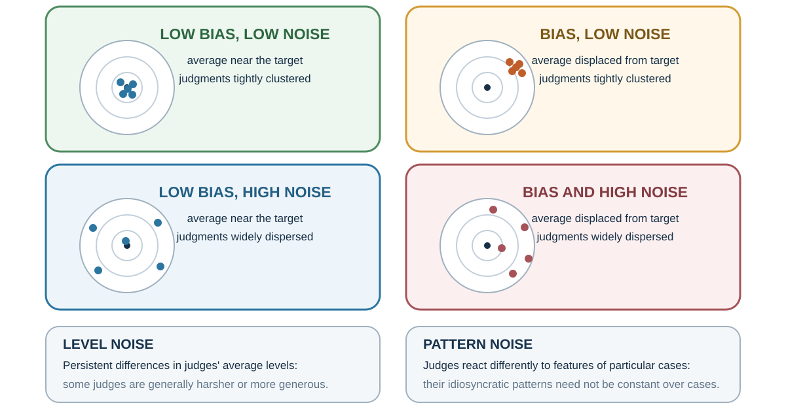
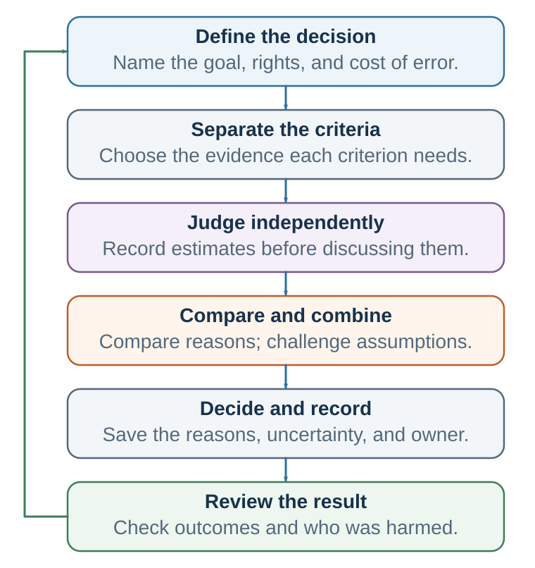
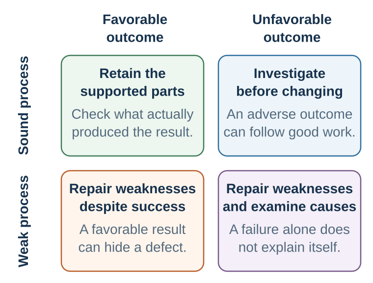
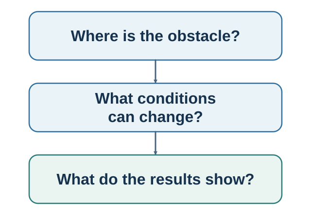
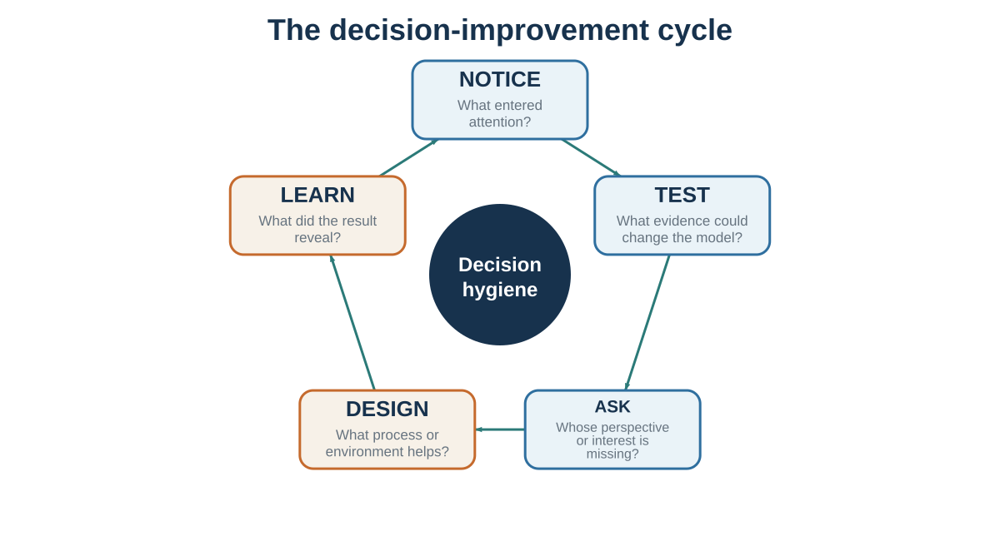

41 Decision Hygiene: Build a Process That Can Learn
Notice, test, ask, design, and learn
Learning goals
- Build a proportionate judgment process before debating its answer.
- Protect independent evidence, structured disagreement, and accountable use of models or AI.
- Review forecasts, process, fairness, and outcomes without confusing luck with quality.
Return to the hiring decision used throughout the book. A committee must choose one candidate for a consequential role. One résumé arrives through a trusted colleague. A confident interviewer speaks first. The job criteria are broad, the base rate for success is unclear, and the committee will later know only how the selected candidate performed—not how the rejected candidates would have done. Intelligence and goodwill cannot remove this structure. The decision needs a process that protects evidence before discussion and learning after the outcome.
By the end of this book, a familiar temptation appears: make a list of biases, promise to remember them, and trust the improved self to perform better next time. That is rarely enough. A bias label does not automatically change a meeting. Knowledge about anchors does not prevent an anchor from entering. Knowing that people conform does not make dissent socially safe. Knowing one should ask about interests does not make the question appear under pressure.
Decision hygiene treats judgment as a system property. The central question is not only whether an individual is intelligent or well intentioned. It is whether the process makes relevant evidence visible, protects independent thought, separates prediction from valuation, creates useful alternatives, records uncertainty, and produces feedback that can be learned from.
Why judgment systems fail: bias, noise, and misplaced intuition
Bias has a direction relative to a defensible target. A forecaster who is consistently too optimistic or a scale that always reads two kilograms high is biased when later outcomes or a calibrated standard supplies that target. In many value-laden decisions, however, there is no simple observable bullseye; the benchmark must be specified and defended rather than smuggled into the picture. Noise is unwanted variation among repeated, commensurable judgments that should be similar. If qualified teachers grade the same essay very differently, physicians use different thresholds for the same case, or managers rate the same candidate from 4 to 9 on a ten-point scale, the system is noisy (Kahneman et al., 2021).

The bullseye is an analogy, not a universal measurement model. It summarizes the location and spread of a set of comparable judgments when a target can be observed or normatively accepted; it cannot establish that the target is legitimate, identify why errors occurred, or decompose the spread by itself. Level noise is persistent variation in judges’ average severity or generosity. Pattern noise arises when judges react differently to features of particular cases. Occasion noise is additional within-judge variation across times or contexts. Estimating these components requires an appropriate repeated-judgment design, not one isolated decision.
Noise is easy to miss because people usually encounter one judgment, not the distribution of judgments they might have received. One candidate meets one panel. One paper receives one set of reviews. One patient sees one clinician. Yet fairness requires that similar cases receive similar treatment unless a relevant difference justifies the variation.
| Failure | What it looks like | First diagnostic question |
|---|---|---|
| Bias | Judgments are wrong in a systematic direction. | What recurring factor shifts the average? |
| Level noise | Some judges are generally harsher or more generous. | Does the result depend on which judge was assigned? |
| Pattern noise | Judges weight features idiosyncratically. | Are the criteria and their weights shared? |
| Occasion noise | The same judge varies with time, order, fatigue, or context. | Would this person decide the same way tomorrow? |
| Legitimate discretion | Variation reflects relevant information, values, or circumstances. | Can the exception be explained and documented? |
The distinction matters statistically and ethically. Error increases when judgments are shifted in the wrong direction, widely dispersed, or both. Reducing dispersion around a bad target does not create a good system. Nor should consistency erase morally relevant differences. A noise audit measures variation first; responsible judgment then decides which variation is arbitrary and which is justified.
Decision hygiene is broader than teaching a catalogue of biases. The analogy is medical hygiene: handwashing can prevent infection without identifying the exact germ in advance. Independent scoring, explicit criteria, reference classes, checklists, and decision records can reduce several errors without requiring the user to diagnose the precise bias operating in the moment.
Intuition still has a place. It deserves more trust when the environment contains stable patterns and the judge receives rapid, accurate, attributable feedback. Chess and some skilled emergency work can provide such learning conditions. Long-range strategy, one-off hiring, political forecasting, and innovation often do not. Repetition can create confidence even when feedback is delayed, selective, or confounded (Kahneman & Klein, 2009).
The rule is therefore not “ignore intuition.” It is delay the global impression until the evidence has been structured. Record the first impression if it may contain expertise, but do not let it silently determine every component score. Ask not only, “How experienced is this person?” but, “Could this environment have taught the person the right lesson?”
The structured judgment pipeline
Decision-hygiene tools work best as one sequence rather than as disconnected tricks:

- Define. State the decision, prediction target, values, decision rights, affected people, and error costs.
- Decompose. Evaluate distinct criteria before forming a coherent global story.
- Ground. Begin with base rates, reference classes, or a transparent baseline.
- Judge independently. Record estimates and reasons before discussion, hierarchy, advocacy, or AI output creates correlation.
- Aggregate and compare. Examine the center, dispersion, profiles, disagreements, and model output.
- Challenge. Seek disconfirming evidence, run a premortem or red team, and ask what would change the conclusion.
- Decide and document. State the choice, trade-offs, authority, assumptions, exceptions, and implementation conditions.
- Review and learn. Compare forecasts with outcomes, audit fairness and drift, and change the process where the evidence warrants it.
This is a proportional pipeline, not a command to make every choice slow. A low-stakes reversible decision may need only a quick check. A repeated, consequential, uncertain, contested, difficult-to-reverse, or partly automated decision deserves more structure.
Before the decision: improve the input
Start by defining the decision, the decision-maker, the deadline, and the real constraints. Generate alternatives before comparing them. Include doing nothing, delaying, piloting, negotiating, combining options, and changing the problem. Then make the best feasible alternative forgone visible. The sentence “By choosing this, we give up…” is a practical defense against invisible opportunity cost.
Decision hygiene improves judgment by changing the process around the judge: independent estimates, structured aggregation, premortems, calibration, and after-action review (Klein, 2007; Milkman et al., 2009; Soll et al., 2015; Kahneman et al., 2021).
Use the outside view before the inside story becomes emotionally complete. Identify a reference class and ask what usually happens. Collect independent estimates before discussion so that hierarchy, charisma, and early anchors do not manufacture agreement. Predefine evaluation criteria when hiring, selecting projects, or judging proposals. A rubric cannot eliminate judgment, but it can stop the first global impression from silently deciding every criterion.
Diagnose before redesigning: run a noise audit
Before installing a rubric, algorithm, or extra meeting, measure the variation the system actually produces. Select representative cases from a repeated task—grading, hiring, underwriting, forecasting, peer review, or project approval. Give identical evidence to several qualified judges without discussion. Ask for anchored scores, probability estimates, confidence, and brief reasons. Examine the range and dispersion, general severity differences, and case-specific disagreement. If occasion noise matters, repeat selected cases later.
The final step is interpretive. Which disagreements reflect missing information or legitimate values? Which reflect vague criteria, different thresholds, order, mood, or irrelevant cues? Redesign the specific weak stage and repeat the audit. The question is concrete: Would we accept this decision changing merely because another equally qualified person happened to make it?
Define and decompose before evaluating
Unstructured judgment lets charisma, familiarity, or one vivid weakness organize the whole evaluation. Decomposition asks judges to assess job-relevant or decision-relevant dimensions separately. In hiring, for example, technical skill, learning ability, teamwork, communication, and role requirements should be scored from evidence before asking, “Would I hire this person?” Comparable questions, work samples, and anchored scoring make the judgment more inspectable (Dana et al., 2013; Highhouse, 2008).
Good criteria have four properties:
- they connect to the actual objective rather than a convenient proxy;
- their evidence can be observed or elicited comparably;
- their scale anchors describe meaning, not just numbers;
- their weighting or trade-off is decided explicitly rather than smuggled in through a halo.
Structure can make the wrong value consistently influential. A perfect rubric for “cultural fit” is harmful if fit means similarity to current insiders. Decomposition improves judgment only when the target and criteria are legitimate.
Ground forecasts in the outside view
An inside view explains why this candidate, project, product, or strategy is special. An outside view begins with what happened in comparable cases and then adjusts for case-specific evidence. The reference class should be close enough to inform and broad enough to contain useful variation.
Projects make the contrast visible. Teams commonly build a detailed internal schedule and underestimate cost or delay; a reference-class forecast asks how comparable projects actually performed before accepting the case-specific story (Kahneman & Lovallo, 1993; Flyvbjerg et al., 2002). The reference class is itself a judgment and can be gamed. Record alternative classes considered, the outcome distribution in each, and the reason for every adjustment so that “our case is different” becomes an inspectable claim.
Forecasts should be probabilities or ranges, not only adjectives such as “likely” or “risky.” Over a portfolio of forecasts, calibration becomes visible: events assigned 70 percent should occur about 70 percent of the time. A Brier score can summarize probabilistic accuracy, but the deeper practice is to reward honest uncertainty and timely revision rather than confidence alone (Brier, 1950; Mellers et al., 2014).
When the choice involves a rare project with poor direct precedents, use several reference classes, analogous mechanisms, scenario ranges, and explicit assumptions. “No perfect comparison exists” is not permission to use no comparison at all.
Preserve independence, then aggregate
Discussion is valuable after information has been captured. Before discussion, it creates correlation. Early speakers anchor the range; senior people change what feels safe; repeated arguments sound more supported than they are; and private doubts disappear behind public consensus.
Use the sequence estimate first, discuss second. Ask members to record a score, forecast, strongest reason, and key uncertainty. Then display the distribution. Simple averaging can outperform immediate debate when individual errors are partly independent. Weighted aggregation can help when weights are earned through relevant calibration rather than status. Disagreement is not merely an obstacle to eliminate; it is evidence about ambiguous criteria, different information, or different models.
Aggregation is not a ritual average. It helps when judges possess relevant information and their errors are not perfectly correlated; it cannot remove a shared bias, and it can dilute a person who holds uniquely diagnostic evidence. Diverse problem-solving perspectives can improve a group’s search, but only when the process preserves and integrates them rather than producing conformity (Hong & Page, 2004; Sunstein & Hastie, 2015). Inspect the spread and reasons before deciding whether to average, weight, investigate, or escalate a decisive concern.
Senior people should normally speak after independent input is captured. Anonymous concerns can protect information in high-power settings. A facilitator should ask what evidence explains the spread, not pressure everyone toward the midpoint.
During the decision: structure disagreement
Separate prediction from valuation. Ask first what each person believes will happen and what evidence supports that belief. Ask separately what outcomes matter, which trade-offs are acceptable, and whose welfare or rights count. Many arguments become clearer when “too risky” is decomposed into probability and consequence.
Assign dissent a role rather than waiting for courage. Use a premortem: imagine that the decision failed and list plausible reasons. Ask one person to construct the strongest case against the emerging preference. Protect the dissenter from becoming the problem. The purpose is not permanent opposition; it is to expose information before commitment makes it expensive to hear.
Checklists protect omission in repeated, high-risk work, but they are not universal scripts. A useful checklist is short, located at a natural pause, tied to known failure modes, and revised from experience. A long compliance list can become theatre. The surgical-safety evidence illustrates both the promise and the boundary: checklists can coordinate critical steps, yet results depend on implementation, teamwork, and local adaptation rather than on possessing a document alone (Haynes et al., 2009).
A premortem asks each person to imagine that the plan has failed and independently write plausible causes. The fictional certainty of failure gives doubt permission to speak (Klein, 2007). A red team goes further by constructing an adversarial test of assumptions, evidence, and execution. Red teams need genuine access, time, and protection; a ceremonial critic who cannot change the plan is not decision hygiene. A designated devil’s advocate can be dismissed as merely performing a role, so it should not replace authentic independent concern. Challenge earns its place only when someone has authority to inspect the evidence and the team records what changed in response.
Psychological safety is the social infrastructure beneath these tools. It means that people can ask, disagree, admit error, and surface risk without interpersonal punishment; it does not mean comfort, agreement, or low standards (Edmondson, 1999). Leaders create it behaviorally by inviting specific dissent, responding productively to bad news, separating a concern from the status of the person who raised it, and showing that early correction is valued more than late loyalty.
For the distinct routes by which authority, suppressed dissent, unshared information, pluralistic ignorance, and diffused responsibility can silence challenge, see Authority, Groupthink, and Shared Responsibility.
Safety and accountability are complements. High safety without evidence standards can become comfortable imprecision; high standards without safety can produce polished silence. The accountable system makes reasoning inspectable, expects preparation and correction, and protects the person who reveals a problem before it becomes a failure.
Design choices, not just advice
When behavior repeats, redesign the environment. Change defaults, friction, prompts, timing, information format, social visibility, and feedback. Make desired actions easier at the moment they must occur and make harmful impulsive actions harder. Ethical choice architecture preserves meaningful exit and serves goals that the affected person could endorse under informed reflection.
In persuasion, begin with the audience model rather than the speaker’s facts. Identify the current story, the barrier to updating, the protected identity, and the evidence that would be treated as credible. In communication, ask before assuming and make interpretation testable. In negotiation, improve the BATNA, map interests and priorities, and prepare packages before the pressure of the table.
Better meetings: do not let the presentation become the decision
Many organizations call a meeting before defining what must be decided. Participants hear a polished recommendation, then try to recover independent judgment from inside its frame. A better meeting separates the stages:
| Phase | Process rule | What it protects |
|---|---|---|
| Before | Define the decision, criteria, evidence, authority, and affected people. | The agenda does not silently set the target. |
| Independent input | Collect estimates and concerns before advocacy, discussion, or AI output. | Information diversity and unanchored forecasts. |
| Evidence | Separate facts, assumptions, predictions, values, and recommendations. | Disagreement becomes diagnosable rather than personal. |
| Challenge | Use an outside view, premortem, strongest objection, and “what would change our minds?” | Doubt becomes a role, not an act of disloyalty. |
| Decision | State the choice, trade-offs, exceptions, owner, and implementation conditions. | Conversation becomes accountable action. |
| Review | Set indicators, thresholds, and a review date. | Outcomes can update the process without rewriting it. |
Roles can make the process visible: one person tracks criteria, one assumptions, one risks and dissent, one unresolved questions, and one implementation. Decision rights must also be explicit. Who decides? Who advises? Who must consent? Who implements? Ambiguity here produces recurring debate and hidden vetoes.
The decision audit: from a smooth story to an inspectable process
A coherent account of a decision is not the same thing as the process that produced it. Begin an audit by writing the ordinary five-sentence story: What decision did I face? What did I choose? Why did it seem right? What happened? How good was the decision? That story is useful because it captures what is currently retrievable. It is also dangerous because it tends to blend what was known then with what became known later.
Now slow the story into six inspectable components:
| Component | Audit question | Common failure | Process redesign |
|---|---|---|---|
| Alternatives | What options were actually on the table? | Treating the first menu as complete. | Generate, combine, negotiate, delay, or pilot. |
| Prediction | What was expected under each option? | Confusing confidence with evidence. | Use base rates, ranges, and disconfirming tests. |
| Valuation | What mattered, to whom, and why? | Treating priorities as obvious or unanimous. | Name stakeholders, trade-offs, and protected values. |
| Opportunity cost | What was the best feasible path forgone? | Making the unchosen future psychologically invisible. | Ask “Compared with what?” before commitment. |
| Context and state | What cue, emotion, norm, identity, or constraint was active? | Misattributing an incidental influence to the option. | Change timing, order, frame, role, or environment. |
| Feedback | What was supposed to be learned, and when? | Letting hindsight rewrite the original forecast. | Record assumptions and set a review date. |
The audit does not prove that the chosen option was best, recover the road not taken, or reveal how every counterfactual future would have unfolded. It can reveal missing options, unsupported predictions, hidden values, invisible opportunity costs, contextual pressures, and feedback that was never designed. Its purpose is prospective: make the next decision more testable than the last one.

After the outcome: learn without worshipping luck
Review the process using what was knowable at the time. A good decision can produce a bad outcome, and a poor process can get lucky. Compare forecasts with outcomes, not stories with feelings. Ask which assumptions failed, which information was missing, which values changed, and which parts of the process should remain even though the outcome was disappointing.
Do not update from one noisy result more than the evidence warrants. Regression to the mean, random variation, and selective feedback can create false lessons. Calibrate over many predictions. Reward accurate uncertainty and timely revision, not only confident success.
The retrospective biases developed earlier now become design requirements. Outcome bias and hindsight bias separate results from what was knowable ex ante; self-serving attribution assigns success to skill and failure to circumstances; and rationalization constructs a coherent defense after the choice. A disciplined review counters all four by asking: What did we know then? What did we predict? Which assumptions failed? What was process, what was luck, and what remains unknowable? The contribution of decision hygiene is not another definition of the biases, but a process that makes them harder to enact.
The practical record is a two-column decision journal:
| Before choosing | After the outcome |
|---|---|
| Decision statement and deadline | What happened, including delayed effects? |
| Alternatives considered | What was process and what was luck? |
| Assumptions and probabilistic predictions | Which assumptions failed or remain untested? |
| Values, stakeholders, and trade-offs | What did we miss or misweight? |
| Emotional state, incentives, and dissenting views | Which pressures or minority concerns proved relevant? |
| Models or AI consulted, and reasons for following or overriding them | Did the tool add value, and was reliance calibrated? |
| Best feasible alternative forgone | What should—and should not—change next time? |
| Review date and evidence to collect | Which new prediction or decision rule will be tested? |
Reflection differs from rationalization because it produces a testable change. “How can I defend what I did?” searches for coherence. “What process produced this choice?” separates evidence, values, context, and luck. “What will I do differently next time?” turns the answer into a new rule, forecast, or experiment.
The decision-improvement cycle: notice, test, ask, design, learn


The framework can be compressed into five verbs. Notice what attention selected and what it excluded. Test the model with base rates, counterevidence, experiments, and alternative explanations. Ask other people for their perspective, interests, constraints, and meaning. Design the environment, message, conversation, or agreement so that good action is easier. Learn from a record that existed before the outcome.
Decision, persuasion, communication, and negotiation are not separate skills. They are different forms of model management. In each case, we are trying to understand how a mind represents a situation, what it expects, what it values, which actions appear possible, and what feedback will change the next cycle. The deepest practical lesson is therefore not “think harder.” It is “build a process in which better thinking has a chance to occur.”
| Move | Core question | Typical tool |
|---|---|---|
| Notice | What entered attention, and what stayed invisible? | Attention audit; option generation |
| Test | What would disconfirm the current model? | Base rate; premortem; pilot; alternative explanation |
| Ask | Whose perspective, interest, or constraint is missing? | Perspective-getting; diagnostic questions |
| Design | How can the environment or process make better action easier? | Criteria; defaults; friction; packages; role design |
| Learn | What did we predict, what happened, and what was luck? | Decision journal; calibration; process debrief |
Return to the hiring decision
Before reviewing candidates, the committee defines job-relevant outcomes, error costs, decision rights, and criteria that can be observed comparably. It records a relevant performance base rate and identifies what evidence would justify departing from it. Each member then reviews the same work sample and structured evidence, scores each dimension independently, and records a probability of success before seeing other judgments or an AI summary.
Only then does the committee compare the distribution. A spread in scores is information: perhaps the criterion is vague, members possess different evidence, or one feature has created a halo. The chair speaks after independent input. The group tests its leading account against the strongest alternative, records the choice, uncertainty, trade-offs, and reasons for any exception, and sets an implementation and review plan.
After the outcome, the committee reviews what was knowable at the time. It does not treat the selected candidate’s success or failure as proof that every earlier inference was correct. Across hires, it examines calibration, predictive validity, subgroup outcomes, exceptions, and process variation. The opening choice has become an inspectable learning system.
Ethics, governance, and proportionality
Structure is not automatically fair. A rubric can make the wrong values consistently influential. A model can turn historical discrimination into a scalable rule. A checklist can suppress professional attention. A decision journal can become surveillance. A demand for consistency can erase relevant differences.
Responsible judgment systems therefore require:
- legitimate criteria: the process must optimize an outcome worth pursuing;
- justified discretion: exceptions are possible, reasoned, and reviewable;
- transparency: affected people can understand the material basis of consequential decisions;
- contestability: errors can be corrected and decisions appealed where stakes warrant it;
- voice and dignity: affected people can be heard, receive an explanation, and encounter a person or institution that owns the decision;
- distributional audit: performance and burdens are examined across groups and over time;
- accountability: no committee, consultant, score, or model becomes a shield from responsibility;
- proportionality: structure grows with consequence, uncertainty, repetition, irreversibility, power, and automation.
The aim is disciplined humility, not technocracy. A good process should become more accurate, consistent, fair, transparent, learnable, and humane—not merely easier to defend.
| Failure mode | First-line protection | Stronger response when stakes warrant it |
|---|---|---|
| Inconsistent judges | Noise audit and anchored criteria | Multiple judges, calibration, model comparison |
| Overconfident plan | Outside view and probability ranges | Premortem, staged investment, stop criteria |
| Hierarchy or conformity | Independent input; senior person speaks last | Anonymous concerns, external review, red team |
| Hindsight learning | Decision journal and review date | Forecast scoring and portfolio-level analysis |
| Repeated prediction | Transparent statistical baseline | Validated model with fairness and drift audit |
| AI-supported judgment | Independent human view and verification | Contestability, subgroup audit, human review board |
| Excess bureaucracy | Short, failure-linked checklist | Remove low-value controls; preserve justified discretion |
Take it forward
- Use this when: a judgment is consequential, repeated, uncertain, difficult to reverse, vulnerable to power, or partly automated.
- Do not infer: more structure is automatically fair, or a model can legitimately choose the target, values, and rights it should serve.
- Try this next: select one recurring decision and specify what must happen before discussion, during challenge, at commitment, and after the outcome.
References cited in this chapter
Brier, G. W. (1950). Verification of forecasts expressed in terms of probability. Monthly Weather Review, 78(1), 1–3.
Dana, J., Dawes, R., & Peterson, N. (2013). Belief in the unstructured interview: The persistence of an illusion. Judgment and Decision Making, 8(5), 512–520.
Dawes, R. M., Faust, D., & Meehl, P. E. (1989). Clinical versus actuarial judgment. Science, 243(4899), 1668–1674.
Dietvorst, B. J., Simmons, J. P., & Massey, C. (2015). Algorithm aversion: People erroneously avoid algorithms after seeing them err. Journal of Experimental Psychology: General, 144(1), 114–126.
Edmondson, A. C. (1999). Psychological safety and learning behavior in work teams. Administrative Science Quarterly, 44(2), 350–383.
Grove, W. M., Zald, D. H., Lebow, B. S., Snitz, B. E., & Nelson, C. (2000). Clinical versus mechanical prediction: A meta-analysis. Psychological Assessment, 12(1), 19–30.
Haynes, A. B., Weiser, T. G., Berry, W. R., Lipsitz, S. R., Breizat, A.-H. S., Dellinger, E. P., Herbosa, T., Joseph, S., Kibatala, P. L., Lapitan, M. C. M., Merry, A. F., Moorthy, K., Reznick, R. K., Taylor, B., & Gawande, A. A. (2009). A surgical safety checklist to reduce morbidity and mortality in a global population. New England Journal of Medicine, 360(5), 491–499.
Highhouse, S. (2008). Stubborn reliance on intuition and subjectivity in employee selection. Industrial and Organizational Psychology, 1(3), 333–342.
Ji, Z., Lee, N., Frieske, R., Yu, T., Su, D., Xu, Y., Ishii, E., Bang, Y. J., Madotto, A., & Fung, P. (2023). Survey of hallucination in natural language generation. ACM Computing Surveys, 55(12), Article 248. https://doi.org/10.1145/3571730
Kahneman, D., & Klein, G. (2009). Conditions for intuitive expertise: A failure to disagree. American Psychologist, 64(6), 515–526.
Kahneman, D., Sibony, O., & Sunstein, C. R. (2021). Noise: A flaw in human judgment. Little, Brown Spark.
Meehl, P. E. (1954). Clinical versus statistical prediction: A theoretical analysis and a review of the evidence. University of Minnesota Press.
National Institute of Standards and Technology. (2023). Artificial intelligence risk management framework (AI RMF 1.0) (NIST AI 100-1). U.S. Department of Commerce. https://doi.org/10.6028/NIST.AI.100-1
Mellers, B. A., Ungar, L., Baron, J., Ramos, J., Gurcay, B., Fincher, K., Scott, S. E., Moore, D., Atanasov, P., Swift, S. A., Murray, T., Stone, E., & Tetlock, P. E. (2014). Psychological strategies for winning a geopolitical forecasting tournament. Psychological Science, 25(5), 1106–1115.
Obermeyer, Z., Powers, B., Vogeli, C., & Mullainathan, S. (2019). Dissecting racial bias in an algorithm used to manage the health of populations. Science, 366(6464), 447–453.
Baron, J., & Hershey, J. C. (1988). Outcome bias in decision evaluation. Journal of Personality and Social Psychology, 54(4), 569–579.
Fischhoff, B. (1975). Hindsight is not equal to foresight: The effect of outcome knowledge on judgment under uncertainty. Journal of Experimental Psychology: Human Perception and Performance, 1(3), 288–299.
Klein, G. (2007). Performing a project premortem. Harvard Business Review, 85(9), 18–19.
Milkman, K. L., Chugh, D., & Bazerman, M. H. (2009). How can decision making be improved? Perspectives on Psychological Science, 4(4), 379–383.
Soll, J. B., Milkman, K. L., & Payne, J. W. (2015). A user’s guide to debiasing. In G. Keren & G. Wu (Eds.), The Wiley Blackwell handbook of judgment and decision making (pp. 924–951). Wiley Blackwell.
Barocas, S., Hardt, M., & Narayanan, A. (2019). Fairness and machine learning: Limitations and opportunities. fairmlbook.org.
Elish, M. C. (2019). Moral crumple zones: Cautionary tales in human-robot interaction. Engaging Science, Technology, and Society, 5, 40–60.
Flyvbjerg, B., Holm, M. S., & Buhl, S. (2002). Underestimating costs in public works projects: Error or lie? Journal of the American Planning Association, 68(3), 279–295.
Friston, K. J., FitzGerald, T., Rigoli, F., Schwartenbeck, P., & Pezzulo, G. (2017). Active inference: A process theory. Neural Computation, 29(1), 1–49.
Hong, L., & Page, S. E. (2004). Groups of diverse problem solvers can outperform groups of high-ability problem solvers. Proceedings of the National Academy of Sciences, 101(46), 16385–16389.
Kahneman, D., & Lovallo, D. (1993). Timid choices and bold forecasts: A cognitive perspective on risk taking. Management Science, 39(1), 17–31.
Mosier, K. L., Skitka, L. J., Heers, S., & Burdick, M. (1998). Automation bias: Decision making and performance in high-tech cockpits. The International Journal of Aviation Psychology, 8(1), 47–63.
Rudin, C. (2019). Stop explaining black box machine learning models for high stakes decisions and use interpretable models instead. Nature Machine Intelligence, 1, 206–215.
Sunstein, C. R., & Hastie, R. (2015). Wiser: Getting beyond groupthink to make groups smarter. Harvard Business Review Press.